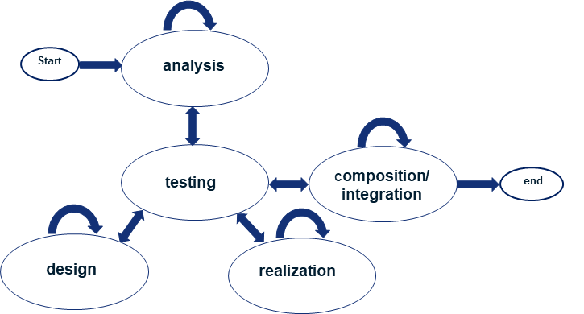
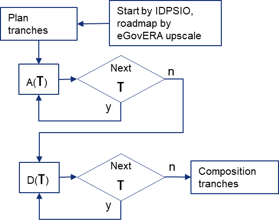
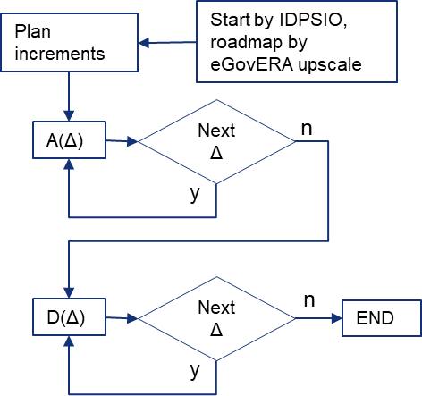
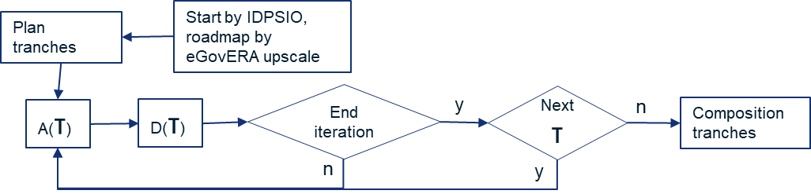
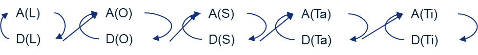
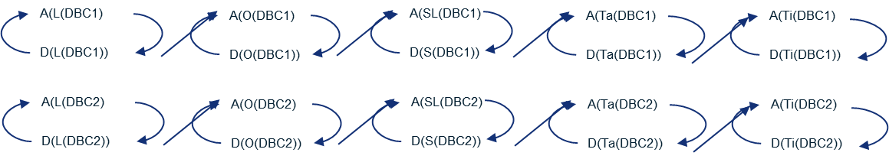
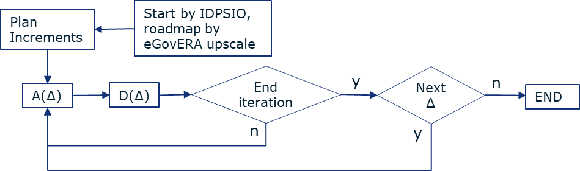
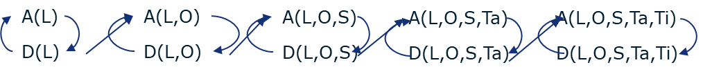
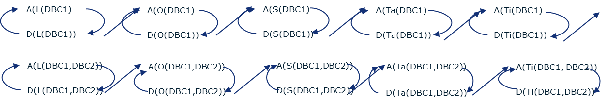

Main life-cycle management approaches for Interoperable Solutions implementation
A practical approach to implementing interoperable digital public services is the application of a “divide and conquer” strategy. This approach addresses the inherent complexity of large-scale information systems by decomposing the implementation lifecycle into manageable parts. The architecture development using eGovERA follows a similar approach as the one for Software Development Lifecycle (SDLC). This can be split into the following steps:
{kind=link}

Figure 1 Development Lifecycle Management
Start:
It represents the starting point where a new architecture development request has been requested in order to create a solution addressing the challenges and requirements expressed by different stakeholders. As an example, this could be requested by an intervention, for instance. Please refer to chapter 6.1 or further information about intervention’s processes.
Analysis:
The first step is to conduct the analysis phase; the purpose of this phase is to identify all the requirements that will drive the solution. These requirements are represented by Architecture Building Blocks (ABB) which are represented using ArchiMate elements suggested by EIRA / eGovERA. These requirements (and the corresponding ABBs) are created as part of the eGovERA model and split into the LOST views. Thus, each ABB will belong to one of the LOST views or the related viewpoints.
It is also important to stablish the relationship between different ABBs within the same view or related viewpoints and also cross-view, depicting and establishing a clear relationship between the represented elements of the model. Please refer to
This phase is finishing will all the requirements represented by ABB belonging to each LOST view or viewpoints and having the relationships with other ABBs.
Bear in mind that this phase could be iterative, also considering the different development lifecycle approaches which will be explained in the following chapters.
Please refer to chapter 4.1 for further information about the analysis phase.
Testing:
Testing and conformance is conducted through Testbed, a tool offered by DG DIGIT. Please refer to chapter 7.1.4 for further information.
Testing depends on the phase in which the project is. It can be identified two different phases:
Analysis/Solution Model Validation
This validation can be achieved from the analysis and design phases and corresponds to validate that the model that we are creating is conformant with the rules stablished by EIRA and eGovERA for analysing and designing a solution. Testbed allows to upload the model and conduct this validation. It can be concluded that this testing is conducted through the model created to check the consistency, completeness and aligned with the guidelines stablish by EIRA and eGovERA.
Implementation Interoperability Testing (not in the scope of EIRA/eGovERA)
This testing is reached from realization and composition/integration phases, and it is out of scope of EIRA and eGovERA. To validate that the Solution Building Blocks (SBBs) correctly implement the requirements defined by the Architecture Building Blocks (ABBs) and conform to the interoperability, reusability, and compliance principles defined in EIRA / eGovERA. This phase includes the definition and execution of test strategies aligned with the LOST views, ensuring that functional, semantic, organizational, and technical aspects are properly verified.
Testing activities should cover unit, integration, system, and acceptance testing, ensuring traceability back to the originating ABBs. Additionally, interoperability testing plays a critical role, validating that cross-border and cross-domain interactions function as expected within the European interoperability context. Test results, defects, and validation outcomes should be systematically documented within the eGovERA model, maintaining consistency between architecture artifacts and implementation evidence.
It can be concluded that this testing corresponds to ensure that the implementation of the SBB is conformant with the specifications and standards documented in the model.
Design:
The design phase translates the requirements captured as ABBs into a solution architecture by identifying the corresponding Solution Building Blocks (SBBs). This involves selecting, specifying, and detailing the components, services, data models, specifications and interfaces required to fulfil the identified requirements.
The design is conducted using ArchiMate elements aligned with EIRA / eGovERA guidelines, ensuring that each SBB realizes one or more ABBs and that traceability is maintained across the lifecycle. Design decisions should consider reuse of existing building blocks, alignment with reference architectures, and compliance with interoperability standards.
Relationships between SBBs must be clearly established within and across LOST views, ensuring coherence between business processes, information flows, application services, and technical infrastructure. The outcome of this phase is a complete solution architecture model.
As with the analysis phase, design can be iterative, refining SBBs as requirements evolve or constraints are identified.
Please refer to chapter 4.2 for further information about the design phase.
Realization (not in scope of EIRA/eGovERA):
The realization phase focuses on the implementation of the SBBs defined during the design phase. This includes the development, configuration, or customization of software components, services, and infrastructure elements required to operationalize the solution.
Each SBB is realized using appropriate technologies and platforms, ensuring alignment with the architectural specifications and interoperability requirements defined in previous phases. Traceability between ABBs, SBBs, and implementation artifacts must be preserved, enabling clear linkage between requirements, design, and delivered components.
Implementation activities should follow established development practices, including version control, continuous integration, and documentation, ensuring that the resulting components are maintainable, scalable, and compliant with the overall architecture.
Composition/Integration (not in scope of EIRA/eGovERA):
The composition and integration phase ensures that individually realized SBBs are assembled into a coherent and functioning system. This involves orchestrating and integrating components across different layers and LOST views, ensuring that interfaces, data exchanges, and service interactions are correctly implemented.
Integration activities must validate that SBBs interoperate as defined in the architecture, particularly in cross-organizational and cross-border scenarios. This includes alignment with interoperability frameworks, data exchange standards, and security requirements defined by EIRA / eGovERA.
The phase also includes the configuration of middleware, APIs, and integration mechanisms necessary to enable seamless communication between components. Any integration issues identified must be addressed, potentially triggering updates in the design or realization phases.
The outcome is a fully integrated solution that reflects the architecture defined in the earlier phases and is ready for final validation and deployment.
End (not in scope of EIRA/eGovERA):
The end phase represents the completion of the architecture development and implementation lifecycle. At this stage, the solution is fully validated, integrated, and ready for operational use.
All architectural artifacts within the eGovERA model should be finalized, ensuring that ABBs, SBBs, and their relationships are consistent, complete, and properly documented. This includes capturing lessons learned, documenting deviations from the initial architecture, and ensuring alignment with governance and compliance requirements.
This phase ensures that the architecture delivers its intended value and remains aligned with stakeholder needs and interoperability objectives.
Building on the concepts of tranches and increments, different delivery methodologies can be defined to organise the architecture development process between the analysis and design phases explained previously in this chapter. These methodologies combine the chosen structuring mechanism (tranches or increments) with a life-cycle logic (waterfall or agile), determining how analysis and design phases are sequenced and executed. The following sections present the main delivery approaches supported by the eGovERA methodology and explains how they can be applied in practice.
Implementation Based on Tranches
Concept of Tranche
A tranche (τ) represents a concrete partial implementation of a target interoperable solution, typically covering both analysis and design activities. Each tranche contributes to the overall target information system while remaining largely independent and almost disjoint from prior tranches.
This relative independence allows:
flexibility in execution
clear separation of concerns
and the possibility to support parallel development streams
Tranches are therefore particularly suited for structuring implementations where the solution can be decomposed into distinct, loosely coupled parts.
Segmentation Criteria for Tranches
Tranches are identified by selecting appropriate segmentation criteria, depending on the nature of the solution and the implementation strategy.
Typical criteria include:
By EIRA/eGovERA interoperability view
By Digital Business Capability (DBC)
These criteria enable structuring the implementation into coherent and manageable units.
Planning Tranches
Planning tranches consists of selecting one segmentation criteria and applying it to define a set of tranches that ensures full coverage of the target information system.
This activity includes:
identifying decomposition dimensions
defining tranche boundaries
ensuring minimal overlap between tranches
validating that all aspects of the solution are addressed
Role of Tranches in Life-Cycle Approaches
Tranches are used in life-cycle approaches where the development is organised as a sequence of distinct segments, such as:
Linear Waterfall
Linear Agile
In these approaches, tranches define the primary unit of progression, with each tranche being completed before moving to the next (with or without iteration, depending on the approach).
Implementation Based on Increments
Concept of Increment
An increment (Δ) represents a concrete partial implementation, covering both analysis and design activities, of a target interoperable solution that is additive to all prior increments.
Each increment extends the solution by building upon previous results, progressively increasing the completeness and maturity of the target information system.
In contrast to tranches, increments are not independent; they are cumulative and interdependent.
Incrementation Criteria
Increments are defined using criteria similar to those used for tranches but applied in an additive manner.
Typical criteria include:
By EIRA/eGovERA interoperability view
By Digital Business Capability (DBC)
These criteria support the progressive extension of the solution scope or depth.
Planning Increments
Planning increments consists of selecting appropriate criteria and defining a sequence of increments that ensures full and progressive coverage of the target model.
This activity includes:
defining the order of increments
ensuring logical dependency between increments
ensuring consistency with previous increments
The result is a roadmap for progressive solution evolution.
Role of Increments in Life-Cycle Approaches
Increments are used in life-cycle approaches where the implementation evolves through additive steps, such as:
Incremental Waterfall
Incremental Agile
In these approaches, increments define the unit of progression, with each increment extending the solution baseline and increasing overall completeness.
The concepts of tranches and increments provide the foundation for the life-cycle management approaches described in the following sections.Top of Form
Bottom of Form
Delivery Methodologies
This section defines the life-cycle management approaches applicable to the implementation of interoperable solutions within the eGovERA methodology. These approaches combine structuring logics (waterfall or agile) with segmentation mechanisms (tranches or increments) and may be applied using different criteria such as EIRA LOST views or Digital Business Capabilities.
A fundamental distinction between approaches concerns the relationship between analysis and design activities:
In waterfall approaches, analysis and design are strictly sequential. The analysis phase for the full scope must be completed before design begins.
In agile approaches, analysis and design are interleaved and iterative, allowing design to start as soon as sufficient analysis is available for a given scope element.
Please refer to section 8.3 for the conventions and symbols used for the figures depicted in the following chapters.
Linear Waterfall Approach
Overview
The Linear Waterfall approach structures the implementation of an interoperable solution as a sequence of tranches (τ), where each tranche represents a distinct and largely independent part of the solution.
In this approach, analysis and design are strictly separated phases. All analysis activities are completed across all tranches before any design activity begins. This ensures a complete and stable understanding of requirements prior to design.
{kind=link}

Figure 2 Linear Waterfall – Approach
Tranches are defined based on selected segmentation criteria and collectively ensure full coverage of the target solution.
Segmentation by View
Tranches are defined according to the EIRA LOST interoperability views (Legal, Organisational, Semantic, Technical – Application, Technical – Infrastructure).
Each tranche addresses one view, and implementation progresses sequentially across views. The starting point may vary depending on the context.
Example pattern:
τ1: Legal
τ2: Organisational
τ3: Semantic
τ4: Technical – Application
τ5: Technical – Infrastructure
{kind=link}
Figure 3 Linear Waterfall – Segmentation by View
Segmentation by Digital Business Capabilities
Tranches are defined by Digital Business Capabilities (DBCs).
Each tranche focuses on a specific DBC and covers all relevant interoperability views within that scope.
Example pattern:
τ1: DBC1
τ2: DBC2
{kind=link}
Figure 4 Linear Waterfall – Segmentation by DBC
Combined Segmentation
Segmentation may combine views and DBCs, enabling structured decomposition across both:
interoperability layers
functional domains
Applicability
This approach is suitable when:
requirements are stable
a predictable and controlled sequence is required
full analysis must be validated before design
It applies to analysis, design, or both.
Incremental Waterfall Approach
Overview
The Incremental Waterfall approach structures the implementation as a sequence of increments (Δ), where each increment is additive and builds upon previous ones.
Each increment follows a waterfall logic, but analysis and design remain strictly separated phases at the global level. This means that analysis must be completed for all planned increments before design activities begin.
{kind=link}

Figure 5 Incremental Waterfall – Approach
This approach enables progressive structuring of the solution while preserving strong control over completeness and consistency.
Segmentation by View
Increments are defined by progressively extending the set of EIRA LOST views addressed.
The process may start from any view and progressively incorporates additional views.
Example pattern:
Δ1: L
Δ2: L, O
Δ3: L, O, S
Δ4: L, O, S, Ta
Δ5: L, O, S, Ta, Ti
{kind=link}
Figure 6 Incremental Waterfall – Segmentation by View
Segmentation by Digital Business Capabilities
Increments are defined by progressively expanding the set of Digital Business Capabilities.
Example pattern:
Δ1: DBC1
Δ2: DBC1 + DBC2
{kind=link}
Figure 7 Incremental Waterfall – Segmentation by DBC
Each increment contributes to the overall solution scope.
Combined Segmentation
Both segmentation strategies may be combined, allowing progressive:
completion of interoperability views
expansion across domains
Applicability
This approach is suitable when:
progressive architecture development is needed
but strict control over analysis completeness is required
design must rely on a fully validated analytical baseline
Linear Agile Approach
Overview
The Linear Agile approach structures the implementation as a sequence of tranches (τ), similar to the Linear Waterfall approach, but introduces iterative cycles within each tranche.
In this approach, analysis and design are interleaved. For each tranche, analysis is performed first and is immediately followed by design activities, which may be iterated multiple times.
{kind=link}

Figure 8 Linear Agile – Approach
Design activities can start without waiting for analysis to be completed across all tranches, enabling faster feedback and adaptation.
Segmentation by View
Tranches may also be defined by interoperability views.
Each view is analysed and designed iteratively before proceeding to the next.
{kind=link}

Figure 9 Linear Agile – Segmentation by View
Segmentation by Digital Business Capabilities
Tranches are typically defined by Digital Business Capabilities.
Each tranche is iteratively analysed and designed before moving to the next.
Example pattern:
τ1: DBC1 (analysis and design iterations)
τ2: DBC2 (analysis and design iterations)
{kind=link}

Figure 10 Linear Agile – Segmentation by DBC
Combined Segmentation
Segmentation may combine views and DBCs, enabling iterative refinement within:
a specific domain
or a specific interoperability layer
Applicability
This approach is suitable when:
iterative refinement is required
but a sequential structure across scope elements must be maintained
Incremental Agile Approach
Overview
The Incremental Agile approach combines incremental delivery (Δ) with iterative development cycles.
In this approach, analysis and design are interleaved within each increment. For each increment, analysis is performed and immediately followed by design, with possible iterations.
{kind=link}

Figure 11 Incremental Agile – Approach
Design can start as soon as sufficient analysis is available for the current increment, without waiting for full coverage of all increments.
Segmentation by View
Increments may be defined by progressively incorporating interoperability views.
Each increment adds new views and refines existing ones through iterations.
{kind=link}

Figure 12 Incremental Agile – Segmentation by View
Segmentation by Digital Business Capabilities
Increments are defined by progressively expanding the set of Digital Business Capabilities.
Example pattern:
Δ1: DBC1
Δ2: DBC1 + DBC2
{kind=link}

Figure 13 Incremental Agile – Segmentation by DBC
Each increment is iteratively analysed and designed.
Combined Segmentation
This approach allows combining:
addition of interoperability views
expansion across domains
iterative refinement within each increment
Applicability
This approach is suitable when:
requirements evolve
continuous feedback is needed
both scope and design must be progressively refined
General Principles
Across all approaches:
Tranches (τ) represent disjoint segments of the solution
Increments (Δ) represent additive evolution of the solution
Segmentation criteria may include:
EIRA LOST views
Digital Business Capabilities
The selection of an approach depends on:
stability of requirements
need for flexibility
complexity of the solution
All approaches ensure alignment with the EIRA interoperability framework and support structured development of interoperable solutions.